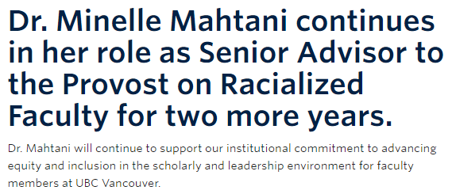
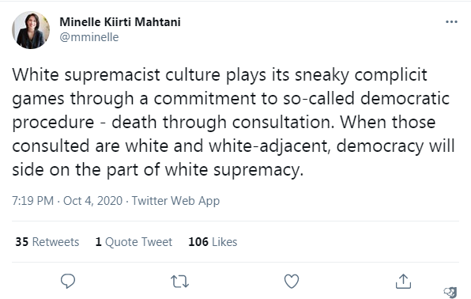
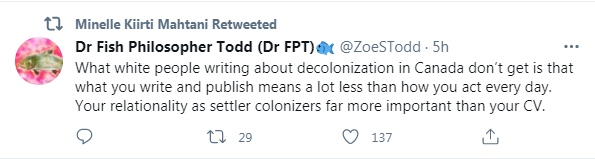

UBC SJI - Minelle Mahtani
March 4th, 2021
For previous entries in my "Meet the UBC Social Justice Institute Faculty," please click here for an expose on Becki Ross. Or for "Dina Al Kassim."
On to Minelle Mahtani, one of the most important anti-Whites at the "Social Justice Institute."
UBC:
TDC_ARTICLE_START
Minelle Mahtani is Associate Professor at the Institute for Social Justice at UBC. She is also the Senior Advisor to the Provost on Racialized Faculty where she supports the recruitment and retention of racialized faculty. She is also a former national television news journalist at the CBC and was previously a journalism and geography professor at University of Toronto. She has been hosting a radio show at Roundhouse Radio, 98.3 Vancouver for the last three years. Her show was unapologetically anti-racist and feminist in its approach, focusing on the stories of systemically disadvantaged communities. The show won four awards, including a Canadian Ethnic Media Association award for building relationships between ethnic communities and Indigenous communities, and a British Columbia Association of Broadcasters award for best community service reporting. She is the author of “Mixed Race Amnesia: Resisting the Romanticization of Multiraciality” with UBC Press.
TDC_ARTICLE_STOP
Minelle Mahtani
I am getting so fucking sick and tired of these people utterly refusing to use paragraph breaks, but at least she was better than Becki "wall of text" Ross in this regard. Good writing is hard, and I sometimes have to do a lot of editing just to be barely coherent, but these peoples biographies are far more poorly written than some random throwaway article of mine.
More imporantly, Minelle's bio may not be a ridiculous as some, "Filipinx queer of colour theorizing" comes to mind, but Minelle is far more important than almost anyone else in this clown fiesta known as the UBC "Social Justice Institute." She's more important, precisely because she's not a joke. She's been a relatively coherent propagandist for a lot of different outfits, including the CBC. She's been a host of a radio show, an "unapologetically anti-racist and feminist," show, focusing on "systemically disadvantaged communities." While pretty much all of these clowns have tons of awards, because these people are so fucking incestuous, her awards are less of a joke than most. Her writing is also much less of a joke.
BTW, "racialized," just means non-White. Anti-Whites had to come up with a term for non-Whites, because they are advocating for privileges for those groups. They don't want to say "we support racial groups for non-Whites, but not Whites," they say "we support racialized Canadians organizing and blah blah." Mostly they just don't want the words White being thrown around a lot, because then White People are going to start getting pissed.

Okay, she's not much more of a joke than the rest.

And this is what she retweets, and endorses.